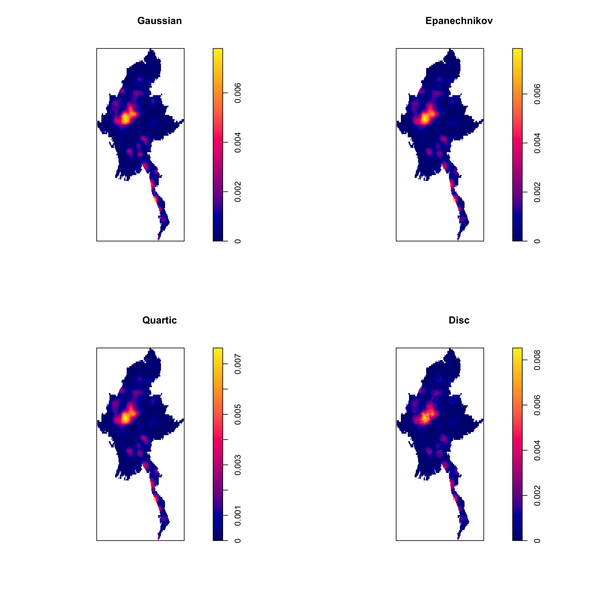
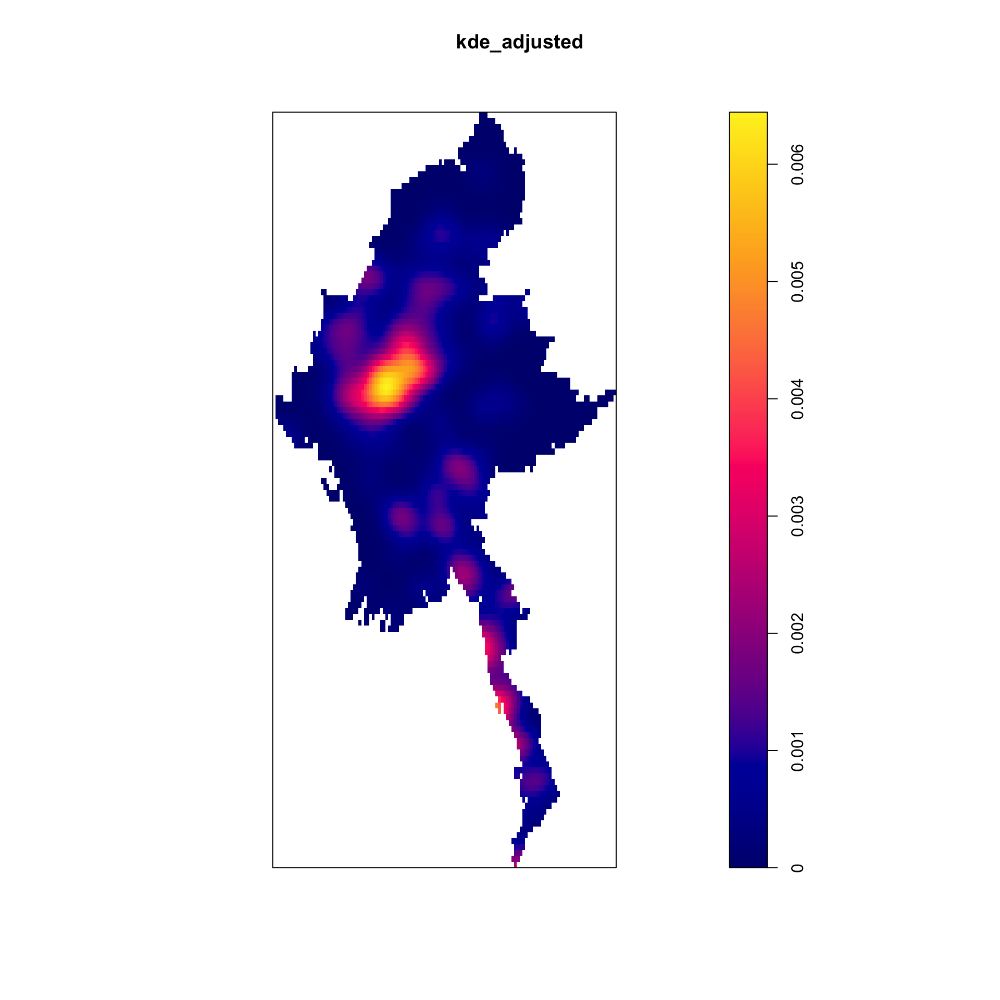
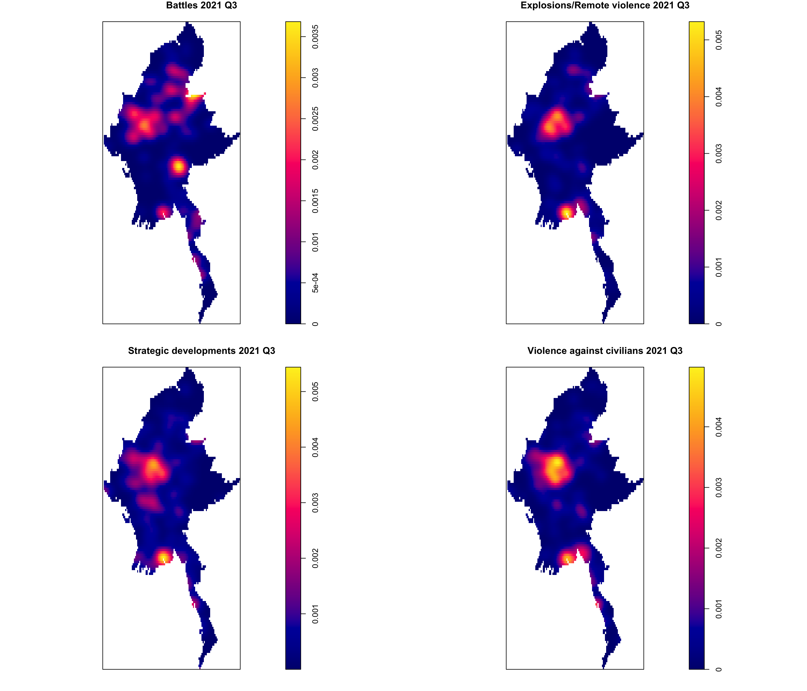

pacman::p_load(sf, raster, spNetwork, tmap, tidyverse, RColorBrewer, spatstat)Take-Home Exercise 1: Geospatial Analytics for Social Good: Application of Spatial and Spatio-temporal Point Patterns Analysis to discover the geographical distribution of Armed Conflict in Myanmar
1. Overview
1.1 Introduction
1.2 Goal
We will be focusing on 4 event types: Battles, Explosion/Remote violence, Strategic developments, and Violence against civilians.
Using appropriate function of sf and tidyverse packages, import and transform the downloaded armed conflict data and administrative boundary data into sf tibble data.frames.
Using the geospatial data sets prepared, derive quarterly KDE layers.
Using the geospatial data sets prepared, perform 2nd-Order Spatial Point Patterns Analysis.
Using the geospatial data sets prepared, derive quarterly spatio-temporal KDE layers.
Using the geospatial data sets prepared, perform 2nd-Order Spatio-temporal Point Patterns Analysis.
Using appropriate tmap functions, display the KDE and Spatio-temporal KDE layers on openstreetmap of Myanmar.
Describe the spatial patterns revealed by the KDE and Spatio-temporal KDE maps.1.1 The Data
1.3 Importing of Packages
Before we start off, we will have to import the necessary packages required for us to conduct our analysis.
We will be using the following packages:
1.4 The Data
For the purpose of this study, we will be using the following datasets. Particularly, I will be focusing on the quarterly armed conflict events from January 2021 until June 2024.
Armed Conflict Location & Event Data of Myanmar between Jan 2021 to Jun 2024 from Armed Conflict Location & Event Data (ACLED), an independent, impartial, international non-profit organization collecting data on violent conflict and protest in all countries and territories in the world.
Myanmar State and Region Boundaries with Sub-region from Myanmar Information Management Unit, MIMU
2. Data Wrangling
2.1 ACLED data
2.1.1 Importing Data
The below chunk of code is used to import ACLED conflict data from a CSV file and convert it into a geospatial data frame using longitude and latitude as coordinates.
In order to perform geoprocessing using two geospatial data, we need to ensure that both geospatial data are projected using similar coordinate system which is why in this case we will project it to WGS84 with the crs code of 32647 using st_transform.
Since the column event_date was stored as characters, dmy() is also used to format the event_date column into a standardized date format for further analysis.
st_as_sfis used to convert a data frame or other tabular data (like from CSVs, data frames, or tibbles) into a simple features (sf) object.
acled_sf <- read_csv("data/aspatial/2021-01-01-2024-06-30-Myanmar.csv") %>%
st_as_sf(coords = c(
"longitude", "latitude"), crs = 4326) %>%
st_transform(crs= 32647)%>%
mutate(event_date = dmy(event_date))Now, let us check the CRS again by using the code chunk below.
st_crs(acled_sf)Coordinate Reference System:
User input: EPSG:32647
wkt:
PROJCRS["WGS 84 / UTM zone 47N",
BASEGEOGCRS["WGS 84",
ENSEMBLE["World Geodetic System 1984 ensemble",
MEMBER["World Geodetic System 1984 (Transit)"],
MEMBER["World Geodetic System 1984 (G730)"],
MEMBER["World Geodetic System 1984 (G873)"],
MEMBER["World Geodetic System 1984 (G1150)"],
MEMBER["World Geodetic System 1984 (G1674)"],
MEMBER["World Geodetic System 1984 (G1762)"],
MEMBER["World Geodetic System 1984 (G2139)"],
ELLIPSOID["WGS 84",6378137,298.257223563,
LENGTHUNIT["metre",1]],
ENSEMBLEACCURACY[2.0]],
PRIMEM["Greenwich",0,
ANGLEUNIT["degree",0.0174532925199433]],
ID["EPSG",4326]],
CONVERSION["UTM zone 47N",
METHOD["Transverse Mercator",
ID["EPSG",9807]],
PARAMETER["Latitude of natural origin",0,
ANGLEUNIT["degree",0.0174532925199433],
ID["EPSG",8801]],
PARAMETER["Longitude of natural origin",99,
ANGLEUNIT["degree",0.0174532925199433],
ID["EPSG",8802]],
PARAMETER["Scale factor at natural origin",0.9996,
SCALEUNIT["unity",1],
ID["EPSG",8805]],
PARAMETER["False easting",500000,
LENGTHUNIT["metre",1],
ID["EPSG",8806]],
PARAMETER["False northing",0,
LENGTHUNIT["metre",1],
ID["EPSG",8807]]],
CS[Cartesian,2],
AXIS["(E)",east,
ORDER[1],
LENGTHUNIT["metre",1]],
AXIS["(N)",north,
ORDER[2],
LENGTHUNIT["metre",1]],
USAGE[
SCOPE["Engineering survey, topographic mapping."],
AREA["Between 96°E and 102°E, northern hemisphere between equator and 84°N, onshore and offshore. China. Indonesia. Laos. Malaysia - West Malaysia. Mongolia. Myanmar (Burma). Russian Federation. Thailand."],
BBOX[0,96,84,102]],
ID["EPSG",32647]]2.1.2 Data Pruning and Structuring
2.1.2.1 Extracting Data for the 4 Main Event Types
Since the data we have encapsulates all 6 types of events and we are only focusing on the 4 event types that I have indicated above, we will only be extracting the data related to that.
acled_sf <- acled_sf %>%
filter(event_type %in% c("Battles", "Strategic developments", "Violence against civilians", "Explosions/Remote violence"))Using unique(), we can check that only rows that fall under the 4 event types have been kept.
unique(acled_sf$event_type)[1] "Battles" "Strategic developments"
[3] "Violence against civilians" "Explosions/Remote violence"2.1.2.2 Data Transformation for Quarterly Analysis
Since we will be analyzing it by quarters, let’s use mutate() to extract the information. Using quarter() from the lubridate package, we can derive the quarters from the event_date.
acled_sf <- acled_sf %>% mutate(quarter = quarter(event_date))Using colnames() we can see that the new column quarter is added.
colnames(acled_sf) [1] "event_id_cnty" "event_date" "year"
[4] "time_precision" "disorder_type" "event_type"
[7] "sub_event_type" "actor1" "assoc_actor_1"
[10] "inter1" "actor2" "assoc_actor_2"
[13] "inter2" "interaction" "civilian_targeting"
[16] "iso" "region" "country"
[19] "admin1" "admin2" "admin3"
[22] "location" "geo_precision" "source"
[25] "source_scale" "notes" "fatalities"
[28] "tags" "timestamp" "geometry"
[31] "quarter" 2.1.2.3 Removal of Redundant Columns
To enhance the efficiency of our dataset, we will also remove redundant columns. This practice reduces memory usage and processing time while simplifying the analysis. By focusing on only the relevant data, we minimize complexity and ensure clearer, more focused results. Examples of the columns we will be removing are: time_precision, inter1 etc. With this, we are able to reduce to a total of 20 columns.
# Define columns to be removed
columns_to_remove <- c("time_precision", "inter1", "inter2", "iso", "source", "source_scale", "notes", "tags", "region", "geo_precision", "source_scale","country")
# Remove columns only if they exist in the dataframe
acled_sf <- acled_sf %>%
select(-all_of(columns_to_remove[columns_to_remove %in% names(acled_sf)]))This is an overview of all the columns left:
colnames(acled_sf) [1] "event_id_cnty" "event_date" "year"
[4] "disorder_type" "event_type" "sub_event_type"
[7] "actor1" "assoc_actor_1" "actor2"
[10] "assoc_actor_2" "interaction" "civilian_targeting"
[13] "admin1" "admin2" "admin3"
[16] "location" "fatalities" "timestamp"
[19] "geometry" "quarter" 2.1.2.4 Grouping of Data By Year, Quarter, Event Type
grped_acled_sf <- acled_sf %>%
group_by(year, quarter, event_type) %>%
summarize(event_count = n(), .groups = 'drop')2.2 Myanmar Boundary and Sub-Region Dataset from MIMU
The code chunk below uses st_read() function of sf package to import mmr_polbnda2_adm1_250k_mimu_1 shapefile into R as a polygon feature data frame.
mmrsr_sf <- st_read(dsn="data/geospatial/mmr_polbnda2_adm1_250k_mimu_1/",
layer="mmr_polbnda2_adm1_250k_mimu_1")Reading layer `mmr_polbnda2_adm1_250k_mimu_1' from data source
`/Users/georgiaxng/georgiaxng/is415-handson/Take-home_Ex/Take-home_Ex01/data/geospatial/mmr_polbnda2_adm1_250k_mimu_1'
using driver `ESRI Shapefile'
Simple feature collection with 18 features and 6 fields
Geometry type: MULTIPOLYGON
Dimension: XY
Bounding box: xmin: 92.1721 ymin: 9.696844 xmax: 101.17 ymax: 28.54554
Geodetic CRS: WGS 84As shown below, currently the data is in geographic coordinate system (latitude/longitude), we will need to transform it to a projected CRS before proceeding.
st_crs(mmrsr_sf)Coordinate Reference System:
User input: WGS 84
wkt:
GEOGCRS["WGS 84",
DATUM["World Geodetic System 1984",
ELLIPSOID["WGS 84",6378137,298.257223563,
LENGTHUNIT["metre",1]],
ID["EPSG",6326]],
PRIMEM["Greenwich",0,
ANGLEUNIT["degree",0.0174532925199433],
ID["EPSG",8901]],
CS[ellipsoidal,2],
AXIS["geodetic longitude",east,
ORDER[1],
ANGLEUNIT["degree",0.0174532925199433]],
AXIS["geodetic latitude",north,
ORDER[2],
ANGLEUNIT["degree",0.0174532925199433]]]mmrsr_sf <- st_transform(mmrsr_sf, crs = 32647)
st_crs(mmrsr_sf)Coordinate Reference System:
User input: EPSG:32647
wkt:
PROJCRS["WGS 84 / UTM zone 47N",
BASEGEOGCRS["WGS 84",
ENSEMBLE["World Geodetic System 1984 ensemble",
MEMBER["World Geodetic System 1984 (Transit)"],
MEMBER["World Geodetic System 1984 (G730)"],
MEMBER["World Geodetic System 1984 (G873)"],
MEMBER["World Geodetic System 1984 (G1150)"],
MEMBER["World Geodetic System 1984 (G1674)"],
MEMBER["World Geodetic System 1984 (G1762)"],
MEMBER["World Geodetic System 1984 (G2139)"],
ELLIPSOID["WGS 84",6378137,298.257223563,
LENGTHUNIT["metre",1]],
ENSEMBLEACCURACY[2.0]],
PRIMEM["Greenwich",0,
ANGLEUNIT["degree",0.0174532925199433]],
ID["EPSG",4326]],
CONVERSION["UTM zone 47N",
METHOD["Transverse Mercator",
ID["EPSG",9807]],
PARAMETER["Latitude of natural origin",0,
ANGLEUNIT["degree",0.0174532925199433],
ID["EPSG",8801]],
PARAMETER["Longitude of natural origin",99,
ANGLEUNIT["degree",0.0174532925199433],
ID["EPSG",8802]],
PARAMETER["Scale factor at natural origin",0.9996,
SCALEUNIT["unity",1],
ID["EPSG",8805]],
PARAMETER["False easting",500000,
LENGTHUNIT["metre",1],
ID["EPSG",8806]],
PARAMETER["False northing",0,
LENGTHUNIT["metre",1],
ID["EPSG",8807]]],
CS[Cartesian,2],
AXIS["(E)",east,
ORDER[1],
LENGTHUNIT["metre",1]],
AXIS["(N)",north,
ORDER[2],
LENGTHUNIT["metre",1]],
USAGE[
SCOPE["Engineering survey, topographic mapping."],
AREA["Between 96°E and 102°E, northern hemisphere between equator and 84°N, onshore and offshore. China. Indonesia. Laos. Malaysia - West Malaysia. Mongolia. Myanmar (Burma). Russian Federation. Thailand."],
BBOX[0,96,84,102]],
ID["EPSG",32647]]To check that all the spatial objects are valid, st_is_valid() is utilized. As shown below, all of the objects are valid.
st_is_valid(mmrsr_sf) [1] TRUE TRUE TRUE TRUE TRUE TRUE TRUE TRUE TRUE TRUE TRUE TRUE TRUE TRUE TRUE
[16] TRUE TRUE TRUEThis is a brief overview of how the map of Myanmar looks like.
plot(mmrsr_sf)
2.3 Mapping the Geospatial data sets
Now, let’s plot the spatial map to gain an initial understanding of the geographic distribution of all of the 4 conflict events by year. As observed, with such a large volume of data, identifying patterns through visual inspection alone can be challenging. This highlights the importance of conducting further analysis to uncover trends and achieve a deeper understanding of the spatial dynamics of these events.
From a brief examination of the map, it’s evident that the region south of Sagaing exhibits the highest concentration of conflicts overall. This area shows a notably higher density of conflict events compared to other regions, marking it as a significant hotspot. However, to fully grasp these patterns and their implications, additional analysis is needed.
# Filter data for 2021
acled_2021 <- acled_sf %>% filter(year == 2021)
# Plot map for 2021
tm_shape(mmrsr_sf) +
tm_polygons() +
tm_shape(acled_2021) +
tm_dots() +
tm_layout(main.title = "ACLED Conflict Events in 2021", main.title.size = 1.2)# Filter data for 2022
acled_2022 <- acled_sf %>% filter(year == 2022)
# Plot map for 2022
tm_shape(mmrsr_sf) +
tm_polygons() +
tm_shape(acled_2022) +
tm_dots() +
tm_layout(main.title = "ACLED Conflict Events in 2022", main.title.size = 1.2)# Filter data for 2023
acled_2023 <- acled_sf %>% filter(year == 2023)
# Plot map for 2023
tm_shape(mmrsr_sf) +
tm_polygons() +
tm_shape(acled_2023) +
tm_dots() +
tm_layout(main.title = "ACLED Conflict Events in 2023", main.title.size = 1.2)
# Filter data for 2024
acled_2024 <- acled_sf %>% filter(year == 2024)
# Plot map for 2024
tm_shape(mmrsr_sf) +
tm_polygons() +
tm_shape(acled_2024) +
tm_dots() +
tm_layout(main.title = "ACLED Conflict Events in 2024", main.title.size = 1.2)2.4 Myanmar Sub-regions: For Reference and Context
For reference to the different sub-regions in Myanmar, we can refer to the labelled map plotted below:
num_colors <- length(unique(mmrsr_sf$ST))
colors <- brewer.pal(n = num_colors, name = "Set3")
tm_shape(mmrsr_sf) +
tm_polygons(col = "ST", palette = colors) + # Apply color palette to polygons
tm_text("ST", size = 0.8, col = "black", bg.color = "white", just = c("center", "center"), xmod = 0, ymod = 0) + tm_layout(main.title = "Myanmar",
main.title.position = "center",
main.title.size = 1.6,
legend.outside = TRUE,
frame = TRUE)+
tm_legend(title = "Sub-regions") # Set custom legend title3. Kernel Density Estimation
To analyze and find the trends in the spatial distribution of conflict events in Myanmar, we will be using Kernel Density Estimation (KDE). KDE is a non-parametric way to estimate the probability density function of a random variable, making it particularly useful in spatial analysis for identifying areas with high concentrations of events.
To determine the optimal bandwidth and kernel parameters for KDE, we will be using a sample of the data. By focusing on a smaller subset, such as specific event types or time periods, we can efficiently explore different parameter combinations and choose the one that provides the most meaningful results before scaling the analysis to the entire dataset.
3.1 Creating owin object
To improve the accuracy of our spatial analysis, we will exclude the smaller islands that are too minor to contribute meaningfully to the Kernel Density Estimation (KDE). We will focus on the main island by merging the geometry and selecting the relevant polygon.
In this code snippet, we combine all intersecting geometries in the mmrsr_sf object into a single polygon using st_union(). We then use st_cast() to ensure that the result is a polygon type. From this merged polygon, we select the row with the highest number of features, which typically corresponds to the main island or the most prominent feature in the dataset.
This selected polygon is then converted to a window object using as.owin(), which allows us to use it in spatial analyses, such as Kernel Density Estimation (KDE).
merged_mmr <- st_union(mmrsr_sf) %>%
st_cast("POLYGON")
merged_mmr <- merged_mmr[c(9)]
mmr_owin <- as.owin(merged_mmr)Here is the plot of the main island, without its outer islands.
plot(mmr_owin)
3.2 Selection of Sample Data
To choose a representative sample, we will first calculate the median number of data points across different groupings, such as year, quarter, and event type. This will help us understand the typical size of our data subsets. Using this median value, we will identify the subset of data with an event_count closest to this median.
By selecting a sample that aligns with this typical value, we ensure that our sample accurately reflects the general distribution of the dataset. We will then use this representative sample to determine the optimal parameters for Kernel Density Estimation (KDE), such as bandwidth and kernel type. This approach will help us achieve more reliable and meaningful results in our spatial analysis.
Here is the R code to select the representative sample. In this case, the resulting sample data we have arrived at is for “Battles” in the second quarter of 2023.
# Calculate mean and median of event counts
median_event_count <- median(grped_acled_sf$event_count)
# Find the row with event_count closest to the median
sample_acled_sf <- grped_acled_sf %>%
mutate(distance_to_median = abs(event_count - median_event_count)) %>%
arrange(distance_to_median) %>%
slice(1)
# Print the closest row(s)
sample_acled_sfSimple feature collection with 1 feature and 5 fields
Geometry type: MULTIPOINT
Dimension: XY
Bounding box: xmin: -174035.7 ymin: 1103500 xmax: 518300.4 ymax: 3006373
Projected CRS: WGS 84 / UTM zone 47N
# A tibble: 1 × 6
year quarter event_type event_count geometry
<dbl> <int> <chr> <int> <MULTIPOINT [m]>
1 2023 2 Battles 814 ((-174035.7 2284958), (-152179.1 2277258…
# ℹ 1 more variable: distance_to_median <dbl>Here, we converted the representative sample data to ppp format and checked for duplicates. In this case, no duplicates were found, confirming the integrity of our sample for further KDE analysis.
sample_acled_ppp <- as.ppp(st_coordinates(sample_acled_sf),st_bbox(sample_acled_sf))
any(duplicated(sample_acled_ppp))[1] FALSEsample_acled_ppp <- sample_acled_ppp[mmr_owin]An overview of the point pattern plot for the sample data.
plot(sample_acled_ppp, pch = 16, cex = 0.5) 
3.3 Determining the Optimal Bandwidth & Sigma
3.3.1 Understanding Sigma & Kernel in Kernel Density Estimation (KDE)
Kernel:
The kernel in Kernel Density Estimation (KDE) is a smoothing function that estimates the probability density function of a dataset. The choice of kernel function affects how the smoothing is applied to each data point. Common kernels include:
Gaussian Kernel: Assumes a normal distribution around each data point, providing a smooth, continuous density estimate.
Epanechnikov Kernel: Parabolic in shape, it minimizes mean squared error but is less smooth than Gaussian.
Uniform Kernel: Assumes constant density within a fixed distance around each data point, simpler but less smooth.
Triangular Kernel: Offers a clear density representation with sharp edges but less smoothness.
The choice of kernel affects the density estimate’s smoothness and shape, with the Gaussian kernel being a versatile and commonly used option.
Sigma:
The sigma argument in the density() function represents the bandwidth of the kernel in KDE. It controls the level of smoothing applied to the density estimate:
What Sigma Represents: Sigma defines the standard deviation of the kernel function, determining the width of the “smoothing window” around each data point.
Effect on KDE:
Smaller Sigma: Leads to less smoothing, producing a more sensitive and detailed density plot, but can highlight noise.
Larger Sigma: Results in greater smoothing, providing a broader view of density but might obscure finer details.
Choosing Sigma: An appropriate sigma balances detail and smoothness. Methods like
bw.diggle,bw.ppl, andbw.scottcan help determine the optimal sigma value.
In summary, the kernel determines the density estimate’s shape, while sigma controls the smoothing level. Both are crucial for accurately reflecting the spatial distribution of data, and selecting the right parameters is essential for meaningful KDE results.
3.3.2 Computing Default Kernel Density Estimation
First, since the original data is in meters, we need to rescale it to kilometers to facilitate more meaningful spatial analysis and visualization. By converting the units to kilometers, we ensure that the scale of the Kernel Density Estimation (KDE) and subsequent analyses align with the geographical extent of the study area.
sample_acled_ppp.km <- rescale.ppp(sample_acled_ppp, 1000, "km")To visualize the spatial distribution of conflict events, here is the Kernel Density Estimation (KDE) plot generated using the default settings, as shown in the code. While default settings can be sufficient for some analyses, the resulting KDE plot here appears oversmoothed, which may obscure finer details and potential small-scale clusters.
This oversmoothing effect reduces the ability to detect subtle patterns in the conflict events, highlighting the importance of adjusting parameters like bandwidth (sigma) to better capture the underlying spatial structure. Thus, to improve the accuracy and granularity of the KDE, we will need to continue experimenting with different bandwidth values and kernel functions.
par(mar = c(0,1,1,1))
kde_default_destination <- density(sample_acled_ppp.km)
plot(kde_default_destination,main = "Default Density KDE for ACLED Myanmar 2023 Q2 'Battles'")
3.4 Experimenting With Fixed Bandwidth
To effectively choose the appropriate bandwidth for Kernel Density Estimation (KDE), several automatic bandwidth selection methods can be employed. Each method has its own approach and focus, which can significantly impact the resulting density estimate. Below are brief descriptions of four common bandwidth selection methods:
bw.CvL: Calculates bandwidth using cross-validation to minimize the integrated mean squared error (IMSE) of the density estimate. This method aims to balance detail and smoothness by optimizing the bandwidth based on a global error metric, which might lead to a broad smoothing effect.
bw.scott: Applies a rule-of-thumb bandwidth based on the sample size and dimensionality of the data. This method is often effective for larger datasets, providing a more generalized estimate by assuming isotropic smoothing (uniform smoothing in all directions).
bw.ppl: Uses a bandwidth tailored for point pattern analysis, considering the spatial distribution of data points. This approach focuses on capturing local variations and spatial patterns, resulting in a more localized smoothing effect compared to other methods.
bw.diggle: Employs a method specifically designed for point patterns to minimize the variance of the density estimate. This results in a smaller bandwidth, leading to a finer and more detailed density plot that may capture small-scale variations but could also emphasize noise.
3.4.1 Automatic Bandwidth Methods
Lets begin by examining the bandwidth values obtained from various automatic bandwidth selection methods using the following code snippet.
bw.ppl(sample_acled_ppp.km) sigma
21.20514 bw.diggle(sample_acled_ppp.km) sigma
8.459462 bw.CvL(sample_acled_ppp.km) sigma
90.92206 bw.scott(sample_acled_ppp.km) sigma.x sigma.y
51.29856 133.58599 Based on the sigma values obtained from the automatic bandwidth calculation methods, we can draw the following inferences about the Kernel Density Estimation (KDE) for the sample data:
bw.ppl: sigma = 21.21
A smaller sigma value suggests a more localized smoothing effect. This method is designed for point pattern analysis and aims to capture spatial patterns with greater precision, highlighting finer details within the data.bw.diggle: sigma = 8.46
As the smallest sigma value, it implies a very narrow smoothing window. This method focuses on minimizing variance and tends to produce a detailed density plot. However, it may also accentuate noise or small fluctuations in the data.bw.CvL: sigma = 90.92
This large value indicates a broad smoothing window. Consequently, each data point affects a wide surrounding area, leading to a smoother KDE that may obscure fine details and small-scale variations.bw.scott: sigma.x = 51.30, sigma.y = 133.59
The method provides different bandwidths for the x and y dimensions, suggesting anisotropic smoothing. The significant difference between these values indicates varying spatial variations in different directions, with a broader smoothing effect along the y-direction.
3.4.2 Plotting KDE for Different Bandwidth & Kernel
To better understand these differences, we will plot the KDE results using each bandwidth value and different kernels. This visual comparison will help us assess how each bandwidth setting and kernel type influences the density estimates, allowing us to determine which combination provides the most meaningful representation of our data.
In practice, choosing the optimal KDE bandwidth is not straightforward, as there is no one-size-fits-all approach. Many studies emphasize that determining the best bandwidth often relies on visually comparing various settings and kernel types to assess their effectiveness and select the most appropriate one for the specific data at hand.
3.4.2.1 Overview of KDE Maps with Gaussian Kernel and Various Bandwidths
Here is an overview of how in general the KDE maps generated with the respective bandwidths looks like using the Gaussian kernel.
kde_diggle <- density(sample_acled_ppp.km, bw.diggle(sample_acled_ppp.km))
kde_CvL <- density(sample_acled_ppp.km, bw.CvL(sample_acled_ppp.km))
kde_scott <- density(sample_acled_ppp.km, bw.scott(sample_acled_ppp.km))
kde_ppl <- density(sample_acled_ppp.km, bw.ppl(sample_acled_ppp.km))
par(mar = c(1,1,1,1.5),mfrow = c(2,2))
plot(kde_diggle,main = "kde_diggle")
plot(kde_CvL,main = "kde_CvL")
plot(kde_scott,main = "kde_scott")
plot(kde_ppl,main = "kde_ppl")
3.4.2.2 Comparing KDE Results Across Different Bandwidths and Kernels
The code chunk below plots different KDE plots for a various different pairings of kernels and bandwidths.
par(mfrow=c(2,2))
plot(density(sample_acled_ppp.km, sigma=bw.ppl, edge=TRUE, kernel="gaussian"), main="Gaussian")
plot(density(sample_acled_ppp.km, sigma=bw.ppl, edge=TRUE, kernel="epanechnikov"), main="Epanechnikov")
plot(density(sample_acled_ppp.km, sigma=bw.ppl, edge=TRUE, kernel="quartic"), main="Quartic")
plot(density(sample_acled_ppp.km, sigma=bw.ppl, edge=TRUE, kernel="disc"), main="Disc")
par(mfrow=c(2,2))
plot(density(sample_acled_ppp.km, sigma=bw.diggle, edge=TRUE, kernel="gaussian"), main="Gaussian")
plot(density(sample_acled_ppp.km, sigma=bw.diggle, edge=TRUE, kernel="epanechnikov"), main="Epanechnikov")
plot(density(sample_acled_ppp.km, sigma=bw.diggle, edge=TRUE, kernel="quartic"), main="Quartic")
plot(density(sample_acled_ppp.km, sigma=bw.diggle, edge=TRUE, kernel="disc"), main="Disc")
par(mfrow=c(2,2))
plot(density(sample_acled_ppp.km, sigma=bw.CvL, edge=TRUE, kernel="gaussian"), main="Gaussian")
plot(density(sample_acled_ppp.km, sigma=bw.CvL, edge=TRUE, kernel="epanechnikov"), main="Epanechnikov")
plot(density(sample_acled_ppp.km, sigma=bw.CvL, edge=TRUE, kernel="quartic"), main="Quartic")
plot(density(sample_acled_ppp.km, sigma=bw.CvL, edge=TRUE, kernel="disc"), main="Disc")
par(mfrow=c(2,2))
plot(density(sample_acled_ppp.km, sigma=bw.scott, edge=TRUE, kernel="gaussian"), main="Gaussian")
plot(density(sample_acled_ppp.km, sigma=bw.scott, edge=TRUE, kernel="epanechnikov"), main="Epanechnikov")
plot(density(sample_acled_ppp.km, sigma=bw.scott, edge=TRUE, kernel="quartic"), main="Quartic")
plot(density(sample_acled_ppp.km, sigma=bw.scott, edge=TRUE, kernel="disc"), main="Disc")
After evaluating the KDE plots, I opted for the Gaussian kernel with the bandwidth provided by bw.ppl because this method provided a more localized smoothing effect, better capturing the spatial patterns in the data. In comparison, the bw.CvL method yielded a much larger bandwidth, leading to excessive smoothing, while bw.scott showed considerable disparity between x and y dimensions, suggesting anisotropic smoothing. The bw.diggle method, though precise, resulted in very narrow smoothing that might overemphasize noise.
Despite this, I found that the Gaussian KDE with bw.ppl still appeared to be undersmoothed. Consequently, further optimization is necessary to refine the bandwidth setting and achieve a more balanced density estimate that accurately represents the underlying spatial patterns in the data.
3.4.3 Fine-Tuning KDE Parameters
Since the Gaussian KDE using bw.ppl seems to be undersmoothed, we will need to adjust the sigma to achieve the desired results. To address this undersmoothing issue, we can increase the sigma value to widen the smoothing window, as demonstrated below. Through continued experimentation, we have determined these final parameters.
adjusted_bw <- bw.ppl(sample_acled_ppp.km) * 1.5
kde_adjusted <- density(sample_acled_ppp.km, sigma=adjusted_bw, edge=TRUE, kernel="gaussian")
plot(kde_adjusted)Here is a comparison between the point pattern and the KDE plot of the sample data, this comparison allows us to evaluate how effectively the KDE captures the spatial distribution of the events and highlights areas where the KDE might need further refinement.
par(mfrow=c(1,2))
plot(sample_acled_ppp, pch = 16, cex = 0.5)
plot(kde_adjusted)
Value of the adjusted bandwidth:
# adjusted_bw4. Quarterly KDE Layers
4.1 2021
4.1.1 Q1
par(mar = c(1,0,1,0))
par(mfrow=c(2,2))
current_year = 2021
current_quarter = 1
quarter_data <- grped_acled_sf %>% filter(year == current_year, quarter == current_quarter)
# Loop through each event
for (i in seq_len(nrow(quarter_data))) {
filtered_sf <- quarter_data[i, ]
# Extract the current year, quarter, and event type
current_event <- filtered_sf$event_type
# Convert to ppp object
filtered_ppp <- as.ppp(st_coordinates(filtered_sf), st_bbox(filtered_sf))
if(any(duplicated(filtered_ppp))){
rjitter(filtered_ppp, retry=TRUE, nsim=1, drop=TRUE)
}
filtered_ppp <- filtered_ppp[mmr_owin]
# Rescale to kilometres
filtered_ppp.km <- rescale.ppp(filtered_ppp, 1000, "km")
# Conduct KDE with the chosen bandwidth
kde_result <- density(filtered_ppp.km, sigma = adjusted_bw, edge = TRUE, kernel = "gaussian")
# Plot the KDE
plot(kde_result, main = paste(current_event," ",current_year, " Q", current_quarter, sep = ""))
}
4.1.2 Q2
Click to view the code
par(mar = c(1,0,1,0))
par(mfrow=c(2,2))
current_year = 2021
current_quarter = 2
quarter_data <- grped_acled_sf %>% filter(year == current_year, quarter == current_quarter)
# Loop through each event
for (i in seq_len(nrow(quarter_data))) {
filtered_sf <- quarter_data[i, ]
# Extract the current year, quarter, and event type
current_event <- filtered_sf$event_type
# Convert to ppp object
filtered_ppp <- as.ppp(st_coordinates(filtered_sf), st_bbox(filtered_sf))
if(any(duplicated(filtered_ppp))){
rjitter(filtered_ppp, retry=TRUE, nsim=1, drop=TRUE)
}
filtered_ppp <- filtered_ppp[mmr_owin]
# Rescale to kilometres
filtered_ppp.km <- rescale.ppp(filtered_ppp, 1000, "km")
# Conduct KDE with the chosen bandwidth
kde_result <- density(filtered_ppp.km, sigma = adjusted_bw, edge = TRUE, kernel = "gaussian")
# Plot the KDE
plot(kde_result, main = paste(current_event," ",current_year, " Q", current_quarter, sep = ""))
}
4.1.3 Q3
Click to view the code
par(mar = c(1,0,1,0))
par(mfrow=c(2,2))
current_year = 2021
current_quarter = 3
quarter_data <- grped_acled_sf %>% filter(year == current_year, quarter == current_quarter)
# Loop through each event
for (i in seq_len(nrow(quarter_data))) {
filtered_sf <- quarter_data[i, ]
# Extract the current year, quarter, and event type
current_event <- filtered_sf$event_type
# Convert to ppp object
filtered_ppp <- as.ppp(st_coordinates(filtered_sf), st_bbox(filtered_sf))
if(any(duplicated(filtered_ppp))){
rjitter(filtered_ppp, retry=TRUE, nsim=1, drop=TRUE)
}
filtered_ppp <- filtered_ppp[mmr_owin]
# Rescale to kilometres
filtered_ppp.km <- rescale.ppp(filtered_ppp, 1000, "km")
# Conduct KDE with the chosen bandwidth
kde_result <- density(filtered_ppp.km, sigma = adjusted_bw, edge = TRUE, kernel = "gaussian")
# Plot the KDE
plot(kde_result, main = paste(current_event," ",current_year, " Q", current_quarter, sep = ""))
}
4.1.4 Q4
Click to view the code
par(mar = c(1,0,1,0))
par(mfrow=c(2,2))
current_year = 2021
current_quarter = 4
quarter_data <- grped_acled_sf %>% filter(year == current_year, quarter == current_quarter)
# Loop through each event
for (i in seq_len(nrow(quarter_data))) {
filtered_sf <- quarter_data[i, ]
# Extract the current year, quarter, and event type
current_event <- filtered_sf$event_type
# Convert to ppp object
filtered_ppp <- as.ppp(st_coordinates(filtered_sf), st_bbox(filtered_sf))
if(any(duplicated(filtered_ppp))){
rjitter(filtered_ppp, retry=TRUE, nsim=1, drop=TRUE)
}
filtered_ppp <- filtered_ppp[mmr_owin]
# Rescale to kilometres
filtered_ppp.km <- rescale.ppp(filtered_ppp, 1000, "km")
# Conduct KDE with the chosen bandwidth
kde_result <- density(filtered_ppp.km, sigma = adjusted_bw, edge = TRUE, kernel = "gaussian")
# Plot the KDE
plot(kde_result, main = paste(current_event," ",current_year, " Q", current_quarter, sep = ""))
}4.2 2022
4.2.1 Q1
4.2.2 Q2
4.2.3 Q3
4.2.4 Q4
4.3 2023
4.3.1 Q1
4.3.2 Q2
4.3.3 Q3
4.3.4 Q4
4.4 2024
4.4.1 Q1
4.4.2 Q2
5. 2nd-Order Spatial Point Patterns Analysis
6. Spatio-Temporal Point Patterns Analysis
6.1 Battles
par(mar = c(1,0,1,0))
par(mfrow=c(4,4))
battle_data <- grped_acled_sf %>% filter(event_type == "Battles")
# Loop through each combination of year and quarter
for (i in seq_len(nrow(battle_data))) {
filtered_sf <- battle_data[i, ]
# Extract the current year, quarter, and event type
current_year <- filtered_sf$year
current_quarter <- filtered_sf$quarter
# Convert to ppp object
filtered_ppp <- as.ppp(st_coordinates(filtered_sf), st_bbox(filtered_sf))
if(any(duplicated(filtered_ppp))){
rjitter(filtered_ppp, retry=TRUE, nsim=1, drop=TRUE)
}
filtered_ppp <- filtered_ppp[mmr_owin]
# Rescale to kilometres
filtered_ppp.km <- rescale.ppp(filtered_ppp, 1000, "km")
# Conduct KDE with the chosen bandwidth
kde_result <- density(filtered_ppp.km, sigma = adjusted_bw, edge = TRUE, kernel = "gaussian")
# Plot the KDE
plot(kde_result, main = paste(current_year, " Q", current_quarter, sep = ""))
}6.2 Explosions/Remote violence
par(mar = c(1,0,1,0))
par(mfrow=c(4,4))
explosions_data <- grped_acled_sf %>% filter(event_type == "Explosions/Remote violence")
# Loop through each combination of year and quarter
for (i in seq_len(nrow(explosions_data))) {
filtered_sf <- explosions_data[i, ]
# Extract the current year, quarter, and event type
current_year <- filtered_sf$year
current_quarter <- filtered_sf$quarter
# Convert to ppp object
filtered_ppp <- as.ppp(st_coordinates(filtered_sf), st_bbox(filtered_sf))
if(any(duplicated(filtered_ppp))){
rjitter(filtered_ppp, retry=TRUE, nsim=1, drop=TRUE)
}
filtered_ppp <- filtered_ppp[mmr_owin]
# Rescale to kilometres
filtered_ppp.km <- rescale.ppp(filtered_ppp, 1000, "km")
# Conduct KDE with the chosen bandwidth
kde_result <- density(filtered_ppp.km, sigma = adjusted_bw, edge = TRUE, kernel = "gaussian")
# Plot the KDE
plot(kde_result, main = paste(current_year, " Q", current_quarter, sep = ""))
}
6.3 Strategic developments
par(mar = c(1,0,1,0))
par(mfrow=c(4,4))
strategic_data <- grped_acled_sf %>% filter(event_type == "Strategic developments")
# Loop through each combination of year and quarter
for (i in seq_len(nrow(strategic_data))) {
filtered_sf <- strategic_data[i, ]
# Extract the current year, quarter, and event type
current_year <- filtered_sf$year
current_quarter <- filtered_sf$quarter
# Convert to ppp object
filtered_ppp <- as.ppp(st_coordinates(filtered_sf), st_bbox(filtered_sf))
if(any(duplicated(filtered_ppp))){
rjitter(filtered_ppp, retry=TRUE, nsim=1, drop=TRUE)
}
filtered_ppp <- filtered_ppp[mmr_owin]
# Rescale to kilometres
filtered_ppp.km <- rescale.ppp(filtered_ppp, 1000, "km")
# Conduct KDE with the chosen bandwidth
kde_result <- density(filtered_ppp.km, sigma = adjusted_bw, edge = TRUE, kernel = "gaussian")
# Plot the KDE
plot(kde_result, main = paste(current_year, " Q", current_quarter, sep = ""))
}6.4 Violence against civilians
par(mar = c(1,0,1,0))
par(mfrow=c(4,4))
violence_data <- grped_acled_sf %>% filter(event_type == "Violence against civilians")
# Loop through each combination of year and quarter
for (i in seq_len(nrow(violence_data))) {
filtered_sf <- violence_data[i, ]
# Extract the current year, quarter, and event type
current_year <- filtered_sf$year
current_quarter <- filtered_sf$quarter
# Convert to ppp object
filtered_ppp <- as.ppp(st_coordinates(filtered_sf), st_bbox(filtered_sf))
if(any(duplicated(filtered_ppp))){
rjitter(filtered_ppp, retry=TRUE, nsim=1, drop=TRUE)
}
filtered_ppp <- filtered_ppp[mmr_owin]
# Rescale to kilometres
filtered_ppp.km <- rescale.ppp(filtered_ppp, 1000, "km")
# Conduct KDE with the chosen bandwidth
kde_result <- density(filtered_ppp.km, sigma = adjusted_bw, edge = TRUE, kernel = "gaussian")
# Plot the KDE
plot(kde_result, main = paste(current_year, " Q", current_quarter, sep = ""))
}
Drafts
Click to view the code
par(mar = c(1,0,1,0))
par(mfrow=c(2,2))
current_year = 2021
current_quarter = 2
quarter_data <- grped_acled_sf %>% filter(year == current_year, quarter == current_quarter)
# Loop through each event
for (i in seq_len(nrow(quarter_data))) {
filtered_sf <- quarter_data[i, ]
filtered_ppp <- as.ppp(st_coordinates(filtered_sf),st_bbox(filtered_sf))
any(duplicated(filtered_ppp))
filtered_ppp <- filtered_ppp[mmr_owin]
# Extract the current year, quarter, and event type
current_event <- filtered_sf$event_type
# Plot the KDE
plot(filtered_ppp, pch = 16, cex = 1,main = paste(current_event))
}